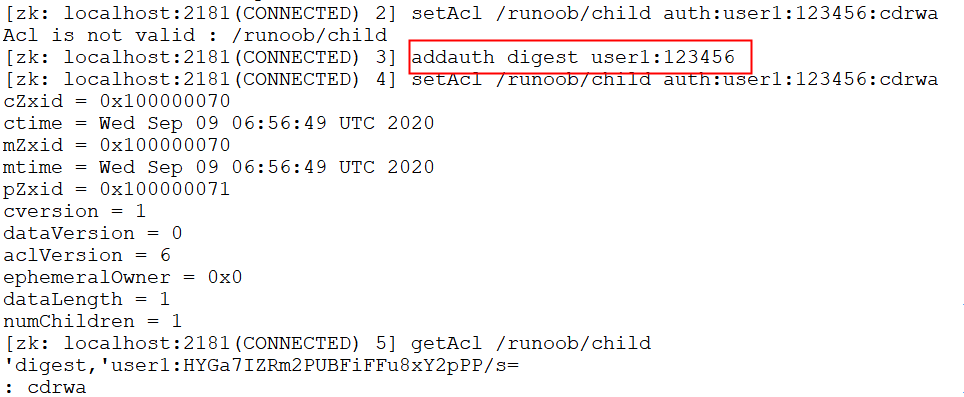
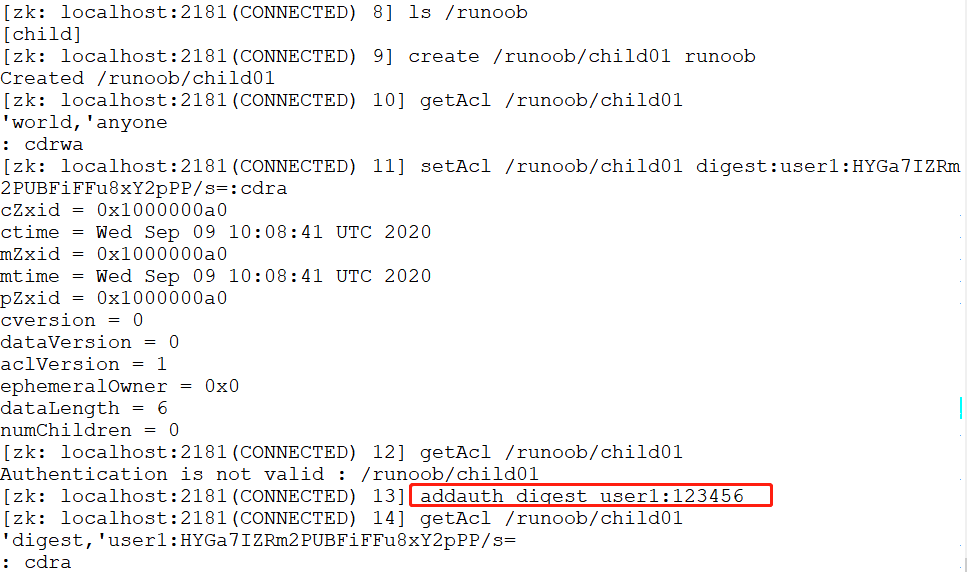
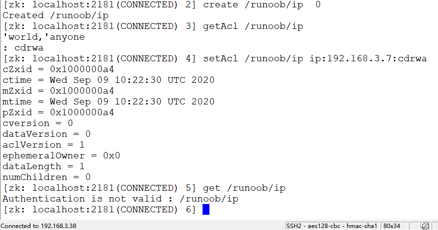

La autorización ACL de Zookeeper (Access Control List, Lista de Control de Acceso) es especialmente importante en entornos de producción, por lo que este capítulo la presenta en detalle.
Los permisos de ACL pueden configurar permisos de lectura y escritura, entre otros, para los nodos, garantizando la seguridad de los datos.
Los permissions pueden especificar diferentes alcances de permisos y roles.
Línea de comandos de ACL
- Comando getAcl: obtiene la información de permisos ACL de un nodo.
- Comando setAcl: establece la información de permisos ACL de un nodo.
- Comando addauth: ingresa información de autenticación y autorización; al registrarse se ingresa la contraseña en texto plano y se guarda de forma cifrada.
Composición de ACL
El ACL de Zookeeper se compone mediante[scheme:id:permissions]para formar la lista de permisos.
- 1、scheme: representa un mecanismo de permisos adoptado, e incluye varios tipos como world, auth, digest, ip y super.
- 2、id: representa los usuarios con acceso permitido.
- 3、permissions: cadena de combinación de permisos, compuesta por cdrwa, donde cada letra representa un permiso diferente: permiso de creación create(c), permiso de eliminación delete(d), permiso de lectura read(r), permiso de escritura write(w), permiso de administración admin(a).
Ejemplo world
Consulta los permisos predeterminados del nodo y luego actualiza la parte de permisos del nodo a crwa; como resultado, la eliminación del nodo falla. Aquí world representa un permiso abierto.
$ getAcl /ejemplo/child $ setAcl /ejemplo/child world:anyone:crwa $ delete /ejemplo/child

Ejemplo auth
auth se utiliza para otorgar permisos; ten en cuenta que primero debe crearse el usuario.
$ setAcl /ejemplo/child auth:user1:123456:cdrwa $ addauth digest user1:123456 $ setAcl /ejemplo/child auth:user1:123456:cdrwa $ getAcl /ejemplo/child

Ejemplo digest
Sal del usuario actual y vuelve a conectar la terminal; digest se puede utilizar para iniciar sesión y verificar con cuenta y contraseña.
$ ls /ejemplo $ create /ejemplo/child01 ejemplo $ getAcl /ejemplo/child01 $ setAcl /ejemplo/child01 digest:user1:HYGa7IZRm2PUBFiFFu8xY2pPP/s=:cdra $ getAcl /ejemplo/child01 $ addauth digest user1:123456 $ getAcl /ejemplo/child01
Sugerencia:La contraseña cifrada se creó en el paso anterior.

Ejemplo IP
Limita los permisos de acceso según la dirección IP. Después de asignar los permisos a la dirección IP 192.168.3.7, la IP 192.168.3.38 ya no tiene permisos de acceso.
$ create /ejemplo/ip 0 $ getAcl /ejemplo/ip $ setAcl /ejemplo/ip ip:192.168.3.7:cdrwa $ get /ejemplo/ip
